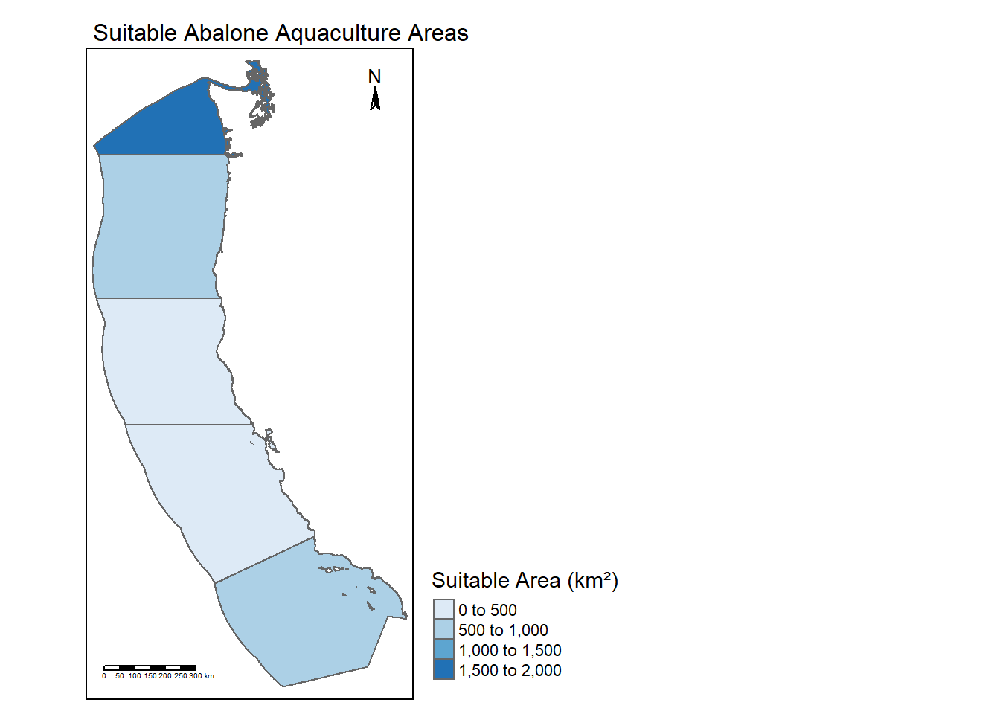

library(tmap)
library(tidyverse)
library(dplyr)
library(sf)
library(here)
library(terra)
library(kableExtra)Homework Assignment #4
Prioritizing Potential Aquaculture
Part 1: Data Processing
Load in Temp, Depth, and EEZs
#load in data
sst_2008 <- rast(here("data", "average_annual_sst_2008.tif"))
sst_2009 <- rast(here("data", "average_annual_sst_2009.tif"))
sst_2010 <- rast(here("data", "average_annual_sst_2010.tif"))
sst_2011 <- rast(here("data", "average_annual_sst_2011.tif"))
sst_2012 <- rast(here("data", "average_annual_sst_2012.tif"))
depth <- rast(here("data", "depth.tif"))
eez <- st_read(here("data", "wc_regions_clean.shp")) #exclusive economic zonesReading layer `wc_regions_clean' from data source
`C:\EDS 223\Week 7\hw4-efairbanks000\data\wc_regions_clean.shp'
using driver `ESRI Shapefile'
Simple feature collection with 5 features and 5 fields
Geometry type: MULTIPOLYGON
Dimension: XY
Bounding box: xmin: -129.1635 ymin: 30.542 xmax: -117.097 ymax: 49.00031
Geodetic CRS: WGS 84#raster stack of sst
sst_stack <- c(sst_2008, sst_2009, sst_2010, sst_2011, sst_2012)Clean up Data
#mean raster from sst raster_stack
mean_sst <- app(sst_stack, fun = mean) %>%
project("EPSG:4326")
#convert to celsius
mean_sst <- mean_sst - 273.15
#crop depth to extens of sst
depth_new <- crop(depth, mean_sst) %>%
resample(mean_sst, method = "near")
#check to see if depth and sst match
stack_check <- c(depth_new, mean_sst)
#successPart 2: Oysters
Set Parameters and Reclassifications
#set oyster paramaters
sst_min <- 11
sst_max <- 30
depth_min <- -70
depth_max <- -0
#resample sst to oyster conditions, 1 optimal, 0 not optimal
sst_rcl <- matrix(c(sst_min, sst_max, 1,
0, sst_min, 0,
sst_max, Inf, 0),
ncol = 3, byrow = TRUE)
x_sst <- classify(mean_sst, sst_rcl)
#resample depth to oyster conditions, 1 optimal, 0 not optimal
x_depth_rcl <- matrix(c(depth_min, depth_max, 1,
-Inf, depth_min, 0,
depth_max, Inf, 0),
ncol = 3, byrow = TRUE)
x_depth <- classify(depth_new, x_depth_rcl)Find Suitable Locations
#use map algebra to find suitable locations
x_locations <- x_sst * x_depthCalculate Suitable Area for Each EEZ
#rasterize eez data so we can do zonal analysis
eez_x_raster <- rasterize(eez, x_locations
, field = "rgn")
#calculate cell areas
cell_area <- cellSize(x_locations, unit = "m")
#combine suitable oyster locations with eez zones
x_eez_zones <- x_locations * eez_x_raster
#find total area of suitable space by eez
suitable_area_by_eez <- zonal(cell_area * (x_eez_zones > 0), eez_x_raster, fun = "sum", na.rm = TRUE)Visualize Findings
#create dataframe that holds suitable area and geometry of eez
suitable_area_with_geometry <- suitable_area_by_eez %>%
left_join(eez %>% select(rgn, geometry), by = "rgn") %>%
mutate(area_km2 = area / 1e6) %>%
st_as_sf()
#map of suitable area
tm_shape(suitable_area_with_geometry) +
tm_fill(col = "area_km2", title = "Suitable Area (km²)", palette = "Blues") +
tm_borders() +
tm_layout(
main.title = "Suitable Oyster Aquaculture Areas",
title.position = c("center", "top"),
main.title.size = 1,
legend.position = c("left", "bottom"),
legend.outside = TRUE,
legend.outside.position = "right",
legend.outside.size = 0.5
) +
tm_scale_bar(position = c("left", "bottom")) +
tm_compass(position = c("right", "top"),
size = 1)
# create table of data
table_data <- suitable_area_with_geometry %>%
st_drop_geometry() %>%
select(rgn, area_km2) %>%
arrange(desc(area_km2))
table_data %>%
kable(
caption = "Suitable Oyster Habitat by Area (km²)",
col.names = c("EEZ", "Suitable Area (km²)"),
format = "html"
) %>%
kable_styling(bootstrap_options = c("striped", "hover", "condensed"), full_width = FALSE)| EEZ | Suitable Area (km²) |
|---|---|
| Southern California | 3508.1870 |
| Washington | 2378.2758 |
| Oregon | 1074.2562 |
| Northern California | 161.7213 |
| Central California | 0.0000 |
Part 3: Red Abalone
Set Parameters and Reclassifications
#set abalone paramaters
sst_min <- 8
sst_max <- 18
depth_min <- -24
depth_max <- -0
#resample sst to abalone conditions, 1 optimal, 0 not optimal
sst_rcl <- matrix(c(sst_min, sst_max, 1,
0, sst_min, 0,
sst_max, Inf, 0),
ncol = 3, byrow = TRUE)
x_sst <- classify(mean_sst, sst_rcl)
#resample depth to abalone conditions, 1 optimal, 0 not optimal
x_depth_rcl <- matrix(c(depth_min, depth_max, 1,
-Inf, depth_min, 0,
depth_max, Inf, 0),
ncol = 3, byrow = TRUE)
x_depth <- classify(depth_new, x_depth_rcl)Find Suitable Locations
#use map algebra to find suitable locations
x_locations <- x_sst * x_depthCalculate Suitable Area for Each EEZ
#rasterize eez data so we can do zonal analysis
eez_x_raster <- rasterize(eez, x_locations
, field = "rgn")
#calculate cell areas
cell_area <- cellSize(x_locations, unit = "m")
#combine suitable abalone locations with eez zones
x_eez_zones <- x_locations * eez_x_raster
#find total area of suitable space by eez
suitable_area_by_eez <- zonal(cell_area * (x_eez_zones > 0), eez_x_raster, fun = "sum", na.rm = TRUE)Visualize Findings
#create dataframe that holds suitable area and geometry of eez
suitable_area_with_geometry <- suitable_area_by_eez %>%
left_join(eez %>% select(rgn, geometry), by = "rgn") %>%
mutate(area_km2 = area / 1e6) %>%
st_as_sf()
#map of suitable area
tm_shape(suitable_area_with_geometry) +
tm_fill(col = "area_km2", title = "Suitable Area (km²)", palette = "Blues") +
tm_borders() +
tm_layout(
main.title = "Suitable Abalone Aquaculture Areas",
title.position = c("center", "top"),
main.title.size = 1,
legend.position = c("left", "bottom"),
legend.outside = TRUE,
legend.outside.position = "right",
legend.outside.size = 0.5
) +
tm_scale_bar(position = c("left", "bottom")) +
tm_compass(position = c("right", "top"),
size = 1)
# create table of data
table_data <- suitable_area_with_geometry %>%
st_drop_geometry() %>%
select(rgn, area_km2) %>%
arrange(desc(area_km2))
table_data %>%
kable(
caption = "Suitable Abalone Habitat by Area (km²)",
col.names = c("EEZ", "Suitable Area (km²)"),
format = "html"
) %>%
kable_styling(bootstrap_options = c("striped", "hover", "condensed"), full_width = FALSE)| EEZ | Suitable Area (km²) |
|---|---|
| Washington | 1833.2796 |
| Southern California | 695.6106 |
| Oregon | 549.3069 |
| Northern California | 390.1075 |
| Central California | 0.0000 |
Data Citations
| Suitable growing conditions | SeaLifeBase. 2024. Species Temperature and Depth Requirements for Marine Aquaculture. | https://www.sealifebase.ca/search.php |
| Sea surface temperatures | NOAA Coral Reef Watch. 2008-2012. 5km Daily Global Satellite Sea Surface Temperature Anomaly v3.1. | https://coralreefwatch.noaa.gov/product/5km/index_5km_ssta.php |
| Bathymetry | General Bathymetric Chart of the Oceans (GEBCO). 2024. Gridded Bathymetry Data. | https://www.gebco.net/data_and_products/gridded_bathymetry_data/#area |
| Exclusive economic zones | Marine Regions. 2024. Exclusive Economic Zones (EEZ) Boundaries, West Coast of the United States. | https://www.marineregions.org/eez.php |